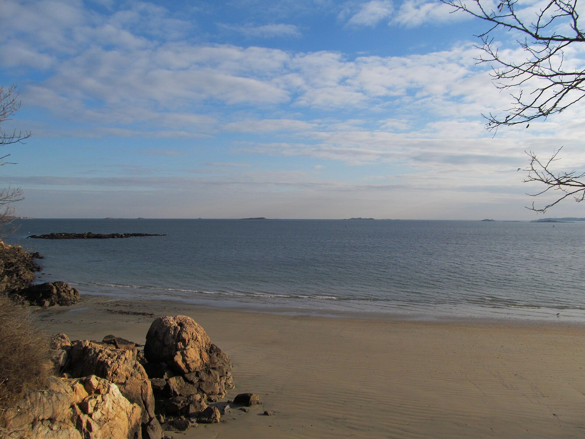
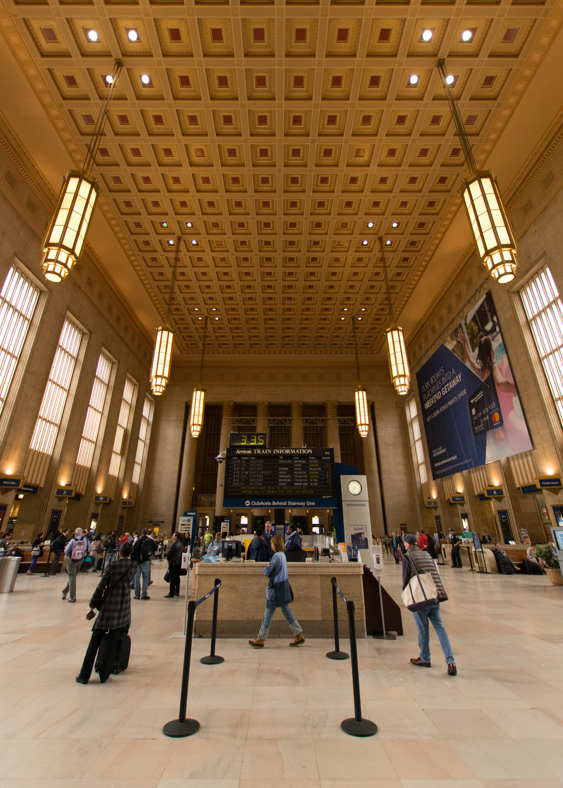
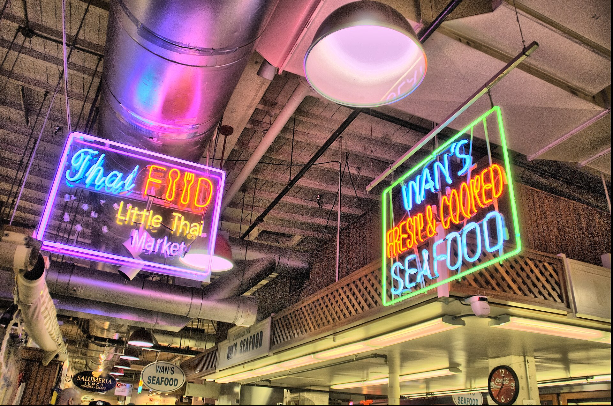
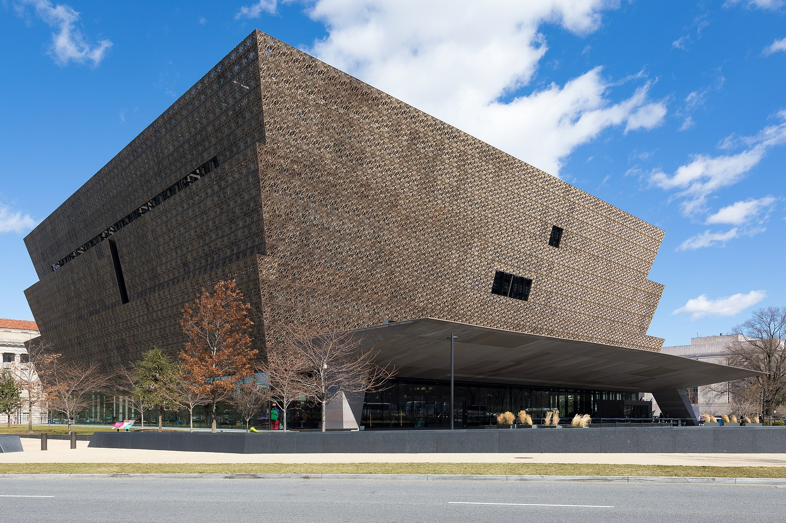

THE ROUTE IS LOCKED
一條鐵路，把五種美國接起來。
長程骨架都已訂好。黑點是過夜城市，珊瑚色是不能遲到的硬時間。
THE FOUR ACTS每座城市，
每座城市，
都有自己的片種。
用照片先決定你想進哪一幕；進入城市頁後，才看早午晚、步行順序、吃法與雨天備案。


ACT I · 7 DAYSNew York
New York
after the landmarks
兩場 Broadway、Lower East Side、Brooklyn 水岸與 Midtown 建築線；餐廳回到配角。

ACT II · 4 DAYSRed brick,
Red brick,
then sea air
Boston 的革命史只是序曲；真正唯一的主角是 Beverly 海岸婚禮。



ACT III · 3 DAYSAmerica’s
America’s
first draft
住進朋友的日常，再用一個上午走進獨立宣言與憲法的房間。



ACT IV · 4 DAYSPower by day.
Power by day.
Memory by night.
Capitol、LOC、Archives、雙 Smithsonian，再把黃昏留給 Reflecting Pool。
CORE
COMPLETE
COMPLETE
NOT A BOOKING CRISIS ANYMORE
打開 Control Room沒有大洞了，剩下的是收尾。
The Dabney 與 Old Ebbitt 已訂；Shukette 等開放，Zahav 走單人吧台策略。朋友開車若確定，就在期限內取消 HI Boston 與 Train 176；10/3 再確認行李與前往 IAD 的方式。
THREE TRAILERS先讓自己想去，
先讓自己想去，
再處理時間表。
旅行社版本不只告訴你「去哪」，還要記得每一天為什麼值得起床。